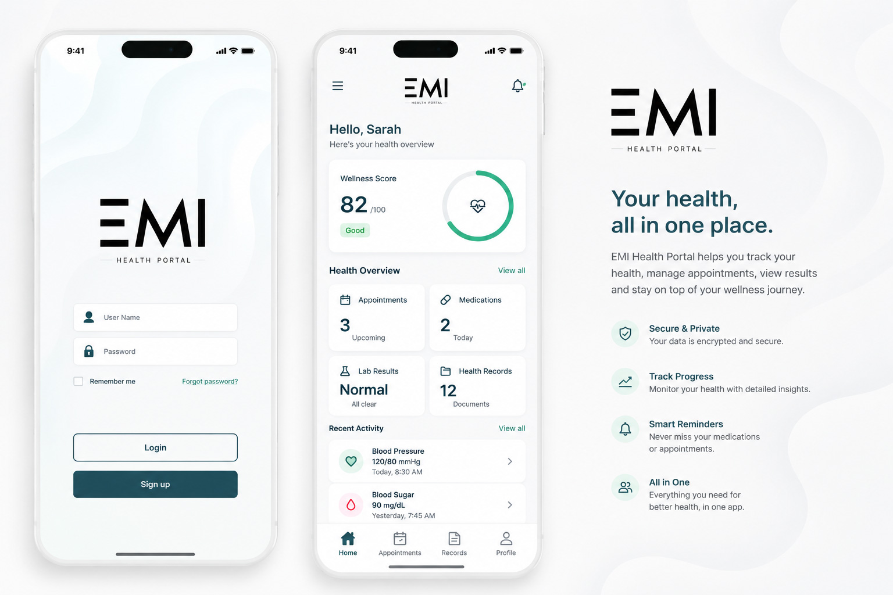
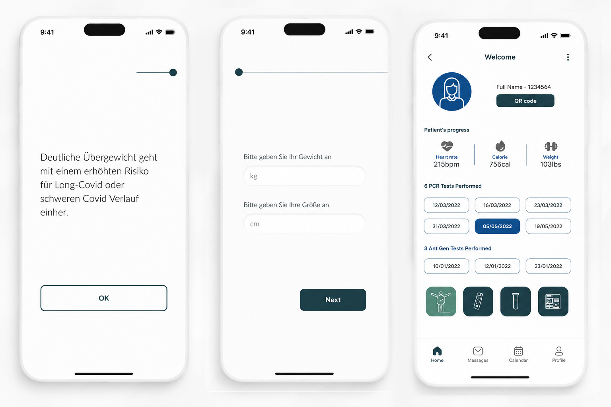

Mobile app concept · 2021
EMI · Mobile Ap
Designing a digital healthcare experience that makes patient interactions simple, accessible, and intuitive.
Role
UX/UI Designer
Platform
Mobile app
Focus
Interaction · Visual design · iOS Mobile App
Tools
Figma · Illustrator · Photoshop

Overview
The Goal
The objective was to create a modern health portal that enables users to:
- View personal medical information
- Access test results
- Track health progress
- Renew prescriptions
- Monitor vital health indicators
- Navigate healthcare services with confidence

UX
Design System
A lightweight visual language was developed using:
- Soft neutral backgrounds
- Calm blue and teal accent colors
- Large touch-friendly components
- Rounded cards
- Simple iconography
- High readability typography

Reflection
Complex features, one clear journey.
Working on EMI Health Portal reinforced the importance of designing for clarity in high-impact environments. Healthcare products require balancing usability, accessibility, and trust while presenting complex information in a way that feels effortless for users.
Next project